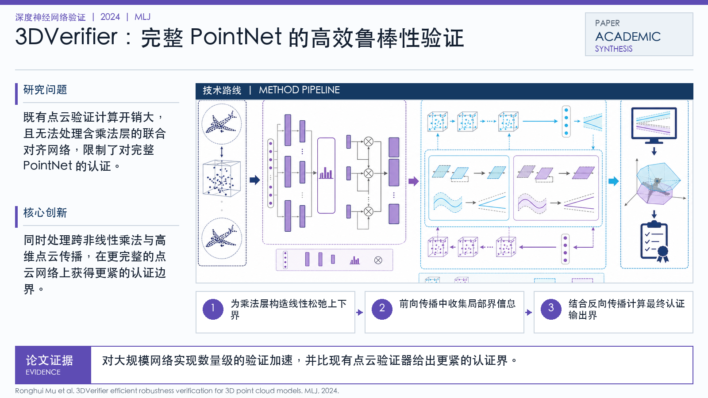

Problem
解决的问题
既有点云验证计算开销大，且无法处理含乘法层的联合对齐网络，限制了对完整 PointNet 的认证。
Verification on DNNs · 2024 · MLJ
3DVerifier efficient robustness verification for 3D point cloud models
Problem
既有点云验证计算开销大，且无法处理含乘法层的联合对齐网络，限制了对完整 PointNet 的认证。
Value
对大规模网络实现数量级的验证加速，并比现有点云验证器给出更紧的认证界。
Paper-grounded Academic Summary
该代表页依据原文摘要、贡献段与方法图注生成。方法视觉由 ImageGen 按论文证据逐篇绘制，中文研究问题、技术路线、创新点与实验结论采用确定性排版，以保证内容与字符准确。
打开原文 PDF
Technical Route
Innovation